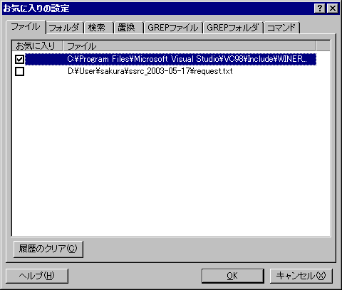

履歴の管理
最近使ったファイルおよびフォルダにお気に入りを設定します。
お気に入りに設定したものは、最近使ったファイルおよびフォルダメニューにマークが付きます。
お気に入りのファイルおよびフォルダは、履歴から消えることはありません。

また、履歴をクリアすることができます。
［すべて］ボタン
すべての履歴を削除します。
[お気に入り以外］ボタン
お気に入り以外の履歴を削除します。
[存在しない項目］ボタン
存在しないファイルやフォルダの履歴を削除します。
[選択項目］ボタン
選択行の履歴を削除します。
■マクロ構文
・構文: OptionFavorite( );
・記録: ×